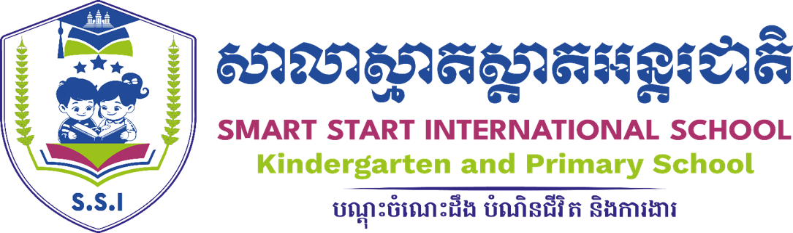

<!-- Opening this shared file directly previews the full website. -->
<script>
  if (/\/(?:header|footer)\.html$/.test(location.pathname)) {
    location.replace(new URL('./', location.href).href);
  }
</script>
<footer class="footer">
      <div class="wrap">
        <div class="footer-grid">
          <div>
            
            <p data-i18n="footer">Learning today. Leading tomorrow.</p>
          </div>
          <div>
            <h3>School</h3>
            <a href="about" data-i18n="about"> About School </a>
            <a href="programs" data-i18n="programs"> Programs </a>
            <a href="teachers" data-i18n="teachers"> Teachers </a>
          </div>
          <div>
            <h3>Community</h3>
            <a href="news" data-i18n="news"> News </a>
            <a href="events" data-i18n="events"> Events </a>
            <a href="gallery" data-i18n="gallery"> Gallery </a>
            <a href="rankings" data-i18n="rankings"> Rankings </a>
          </div>
          <div>
            <h3>Visit us</h3>
            <p>
              Phum Barach, Sangkat Svay Chrum, Krong Arey Ksat, Kandal Province
              <br />
              Mon–Fri · 6:00AM–20:00PM
              <br />
              Sat–Sun · 8:00AM–5:00PM
              <br />
              +855 70/085 366 345
            </p>
          </div>
        </div>
        <div class="copyright">
          © <span data-current-year></span> Smart Start International School. All rights reserved.
        </div>
      </div>
    </footer>
